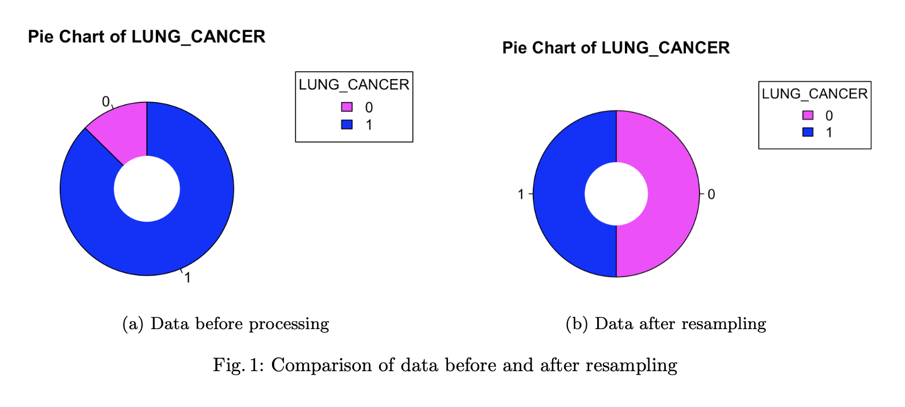
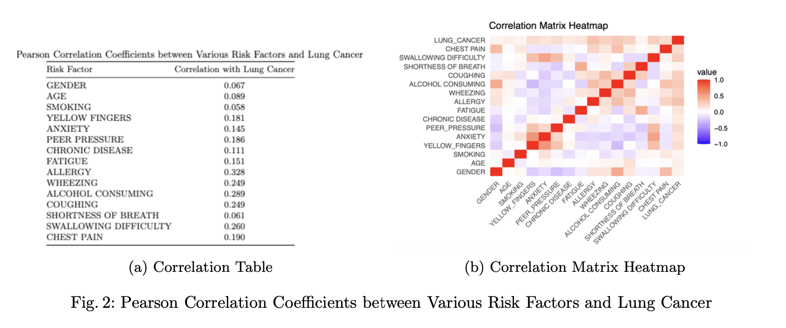
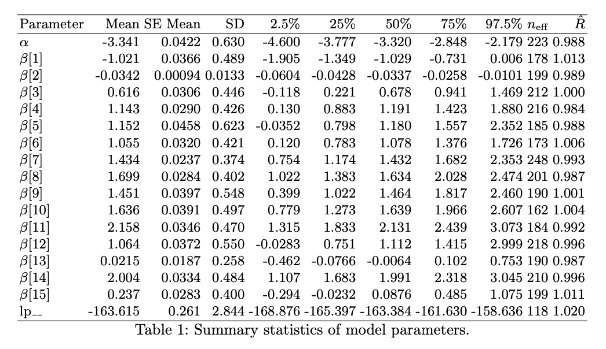
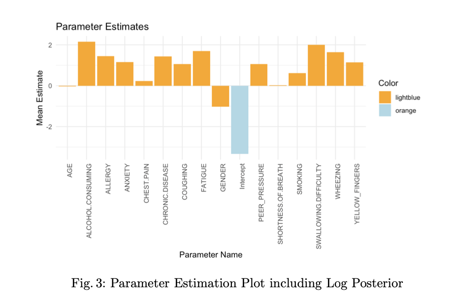
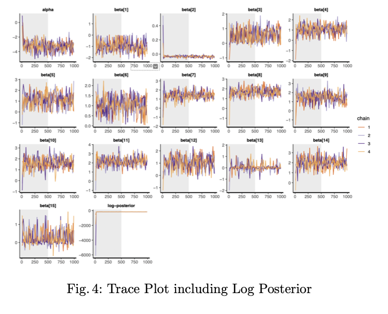
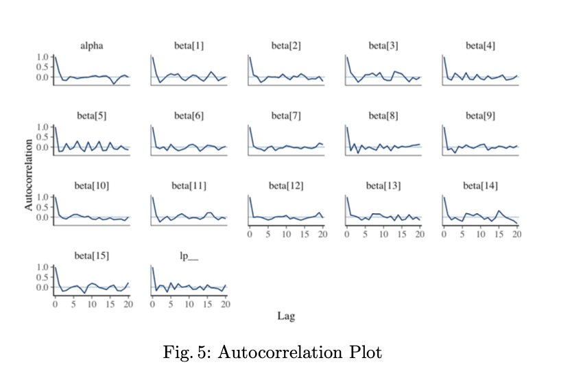
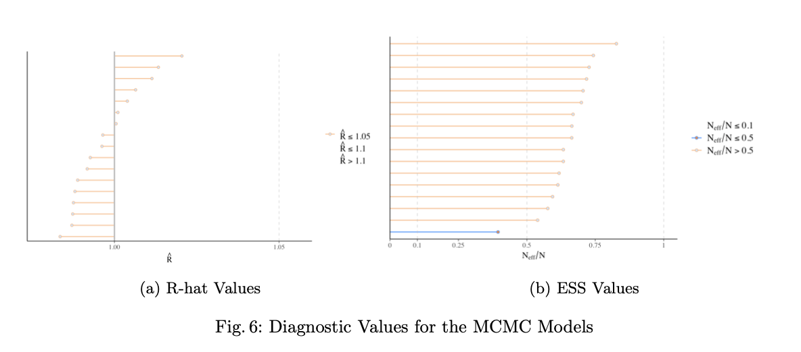
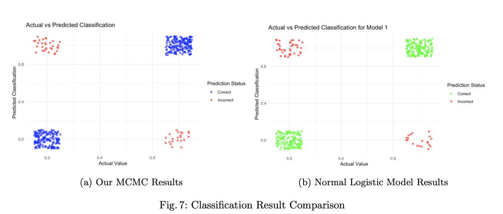
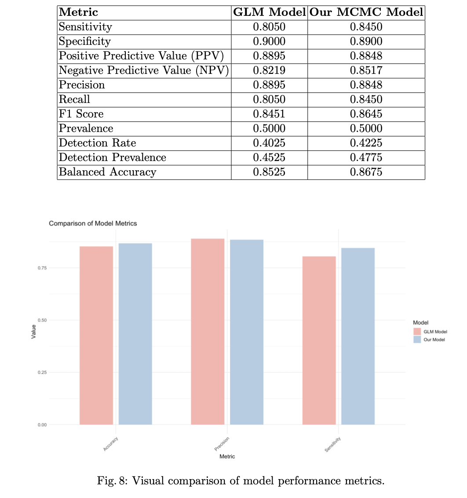

This project aims to predict lung cancer using Bayesian logistic regression with Markov Chain Monte Carlo (MCMC) methods. We analyze a dataset of 309 observations and 16 covariates, including risk factors like smoking, yellow fingers, and anxiety. Given the small sample size, Bayesian methods are employed to improve prediction accuracy and provide a robust alternative to traditional logistic regression.
Class imbalance is a common issue in medical datasets. In this project, we employed oversampling to balance the dataset by adjusting both classes to have 200 instances each.

Our correlation analysis revealed key associations with lung cancer:

Our model predicts the probability of lung cancer given various risk factors, defined as:
P(Y_i=1 | X_i, β, β_0) = 1 / [1 + exp(- (β_0 + X_i^T β))]
For effective variable selection, we employ a Spike-and-Slab prior:
β_i ∼ π ⋅ N(0, σ_slab²) + (1-π) ⋅ N(0, σ_spike²)
We utilized the RStan package, implementing the No-U-Turn sampler (NUTS), a variant of HMC, to run the simulations with specified priors.





Frequentist Model: Defined by:
logit(P(Y=1 | X)) = β₀ + β₁x₁ + β₂x₂ + ... + βₙxₙ
Estimated using Maximum Likelihood Estimation (MLE).
The scatter plots below illustrate the classification results for both models:

We compared our Bayesian logistic regression model, implemented using MCMC methods, with a traditional GLM logistic regression model. Below are the confusion matrices and key statistics for each model.

Andrew Gelman’s guidelines on MCMC iterations and Bayesian analysis techniques were followed in this study.
This project is licensed under the MIT License.